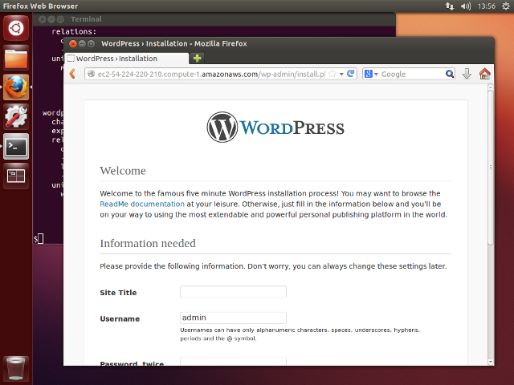

User Guide:
This tutorial will show you how to get started with Juju, including installing, configuring and bootstrapping a new Juju environment. Before you start you will need:
To install Juju, you simply need to grab the latest juju-core package from the PPA:
Ubuntu :
sudo add-apt-repository ppa:juju/stable
sudo apt-get update && sudo apt-get install juju-core
Mac OSX :
Juju is in Homebrew, to install do:
brew install juju
Windows :
Download and run the Juju windows installer from here.
Now the Juju software is installed, it needs to be configured to use your particular cloud provider. This is done by generating and editing a file, environments.yaml, which will live in your ~/.juju/ directory on Linux and OSX, %LOCALAPPDATA%/Juju on Windows. You can generate the environments file manually, but Juju also includes a boilerplate configuration option that will flesh out most of the file for you and minimise the amount of work (and potential errors).
To generate an initial config file, you simply need to run:
juju generate-config
This command will cause a file to be written to your ~/.juju directory if an environments.yaml file does not already exist. It will also create the ~./juju directory if that does not exist.
This file will contain sample profiles for different types of cloud services, but you will need to edit the files to provide specific information for your cloud provider. Sections are created for Amazon (AWS) services, HPCloud and a generic OpenStack instance (and for the local provider if running on Linux). For more specifics on what needs to be changed, see the relevant sections below.
Once you have installed and configured Juju, it is probably a good idea to take it for a bit of a test drive and check that everything is working as expected. Because Juju makes it really easy to deploy services, this is actually quick and straightforward.
The first thing to do is set up a bootstrap environment. This is an instance in the cloud that Juju will use to deploy and control other services with. It will be created according to the configuration you have provided, and your SSH key will automatically be uploaded so that Juju can communicate securely with the bootstrap instance.
juju bootstrap
Note
If you have multiple environments configured, you can choose which one to address with a particular command by adding the -e switch followed by the environment name, E.g. -e hpcloud.
You may have to wait a few moments for this command to return, as it needs to perform various tasks and contact your cloud provider.
Assuming it returns successfully (otherwise see common error messages and what to do about them), we can now deploy some services and explore the basic operations of Juju.
To start with, we will deploy Wordpress, by running this command:
juju deploy wordpress
Now juju will fetch the Wordpress charm and use it, through the bootstrap instance to request and deploy whatever resources it needs to set up this service.
Wordpress needs a database though, so we will also deploy one of those:
juju deploy mysql
Once again, juju will do whatever is necessary to deploy this service for you, and it may take some time for the command to return.
Note
If you want to get more information on what is actually happening, or to help resolve problems, you can add the -v switch to the juju command to get verbose output.
Although we have deployed Wordpress and a MySQL database, they are not linked together in any way yet. To do this we should run:
juju add-relation wordpress mysql
This command uses information provided by the relevant charms to associate these services with each other in whatever way makes sense. There is much more to be said about linking services together which is covered in the juju command documentation, but for the moment, we just need to know that it will link these services together.
In order to make our Wordpress public, we now need to expose this service:
juju expose wordpress
This service will now be configured to respond to web requests, so visitors can see it. But where exactly is it? If we run the juju status command, we will be able to see what services are running, and where they are located.
juju status
The output from this command should look something like this:
machines:
"0":
agent-state: started
agent-version: 1.10.0
dns-name: ec2-50-16-167-135.compute-1.amazonaws.com
instance-id: i-781bf614
series: precise
"1":
agent-state: started
agent-version: 1.10.0
dns-name: ec2-23-22-225-54.compute-1.amazonaws.com
instance-id: i-9e8927f6
series: precise
"2":
agent-state: started
agent-version: 1.10.0
dns-name: ec2-54-224-220-210.compute-1.amazonaws.com
instance-id: i-5c440436
series: precise
services:
mysql:
charm: cs:precise/mysql-18
exposed: false
relations:
db:
- wordpress
units:
mysql/0:
agent-state: started
agent-version: 1.10.0
machine: "1"
public-address: ec2-23-22-225-54.compute-1.amazonaws.com
wordpress:
charm: cs:precise/wordpress-12
exposed: true
relations:
db:
- mysql
loadbalancer:
- wordpress
units:
wordpress/0:
agent-state: started
agent-version: 1.10.0
machine: "2"
public-address: ec2-54-224-220-210.compute-1.amazonaws.com
There is quite a lot of information here. the first section, titled machines: , details all the instances which are currently running. For each you will see the version of Juju they are running, their hostname, instance id and the series or version of Ubuntu they are running.
After that, the sections list the services which are currently deployed. The information here differs slightly according to the service and how it is configured. It will however, always list the charm that was used to deploy the service, whether it is exposed or not, its address and whatever relationships exist.
From this status readout, we can see that wordpress is exposed and ready. If we simply copy the address into a web browser, we should be able to see it running
Congratulations, you have just deployed a service with Juju!
Now you are ready to deploy whatever service you really want from the 100s available at the Juju Charm Store.
To remove all current deployments and clear up everything in your cloud, you can run the command:
juju destroy-environment
This will remove everything, including the bootstrap node.
To learn more about charms, including configuring options and managing running systems, you should continue to read the charm documentation.